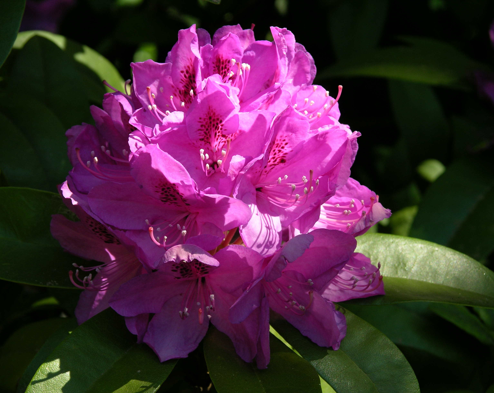
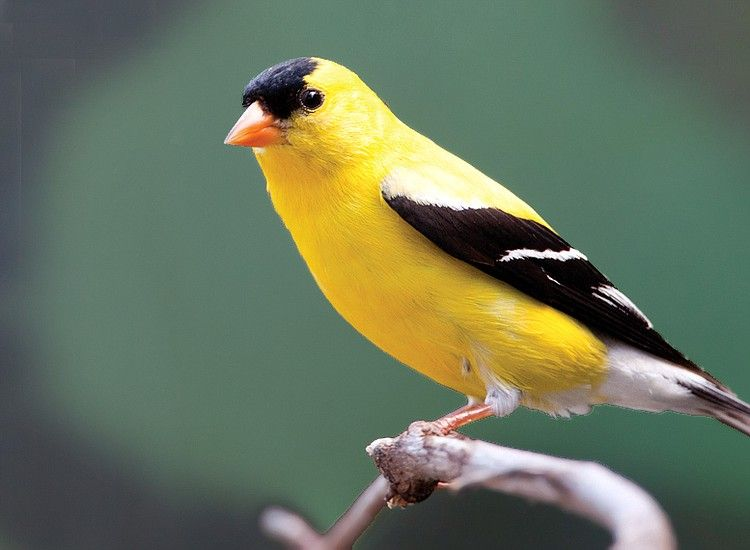

Washington
Granted statehood in 1889, Washington was named in honor of George Washington; it is the only U.S. state named after a
president. The state’s coastal location and excellent harbors have contributed to its role as a leader in trade with
Alaska, Canada and countries of the Pacific Rim. The majestic Mount Rainier soars above Seattle and is the highest peak
in the continental United States. Another Washington landmark, Mount St. Helens erupted in 1980, the deadliest and most
economically destructive volcanic event in U.S. history. The Evergreen State is the nation’s leading producer of apples
and is the home of the coffee chain Starbucks. Famous Washingtonians include musician Jimi Hendrix, entertainer Bing
Crosby and computer pioneer Bill Gates.
| Date of Statehood |
Capital |
Population |
Size |
| November 11, 1889 |
Olympia |
7.71 million |
71,298 square miles |
Motto
Alki (“Bye and Bye”)
Flower
Coast Rhododendron

Bird
Willow Goldfinch

Interesting facts
- The Seattle Space Needle, built for the 1962 World’s Fair, is an iconic part of the city’s skyline and features a
rotating restaurant at the top.
- The Seattle Space Needle, built for the 1962 World’s Fair, is an iconic part of the city’s skyline and features a
rotating restaurant at the top.
- Washington is the nation’s leading producer of apples, pears, sweet cherries and hops
- In 1836, Marcus and Narcissa Whitman established a mission at Waiilatpu on the Walla Walla River to bring Christianity
to the Cayuse Indians. When an increasing number of colonists migrated to the area and an epidemic of measles spared the
lives of white children but killed almost all Cayuse offspring, Chief Tiloukaikt and several members of his tribe became
infuriated, and, on November 29, 1847, killed the Whitmans along with 12 other settlers. The Whitman Massacre, as it
became known, resulted in the Cayuse War and, ultimately, the dissolution of the Cayuse tribe.